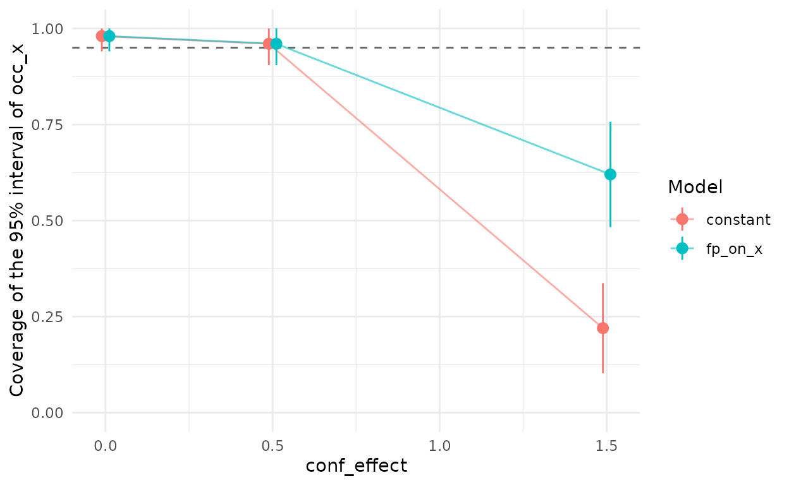
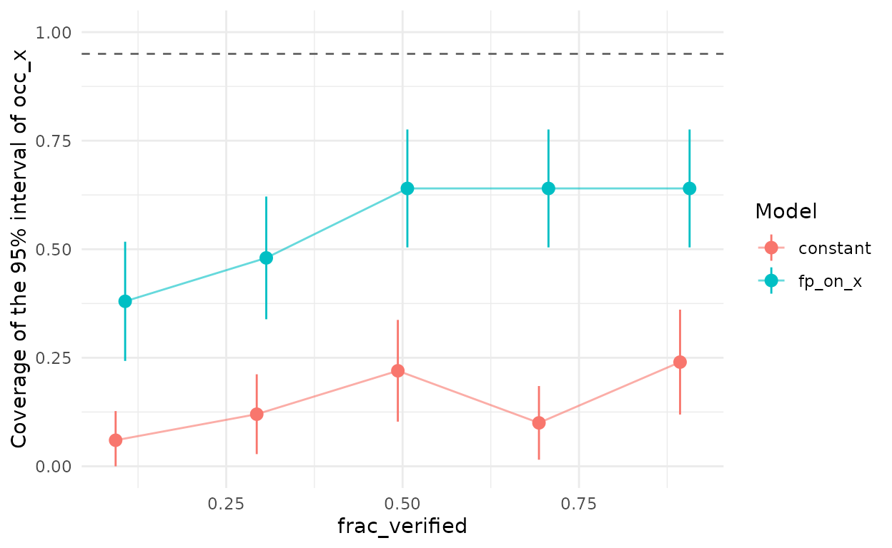
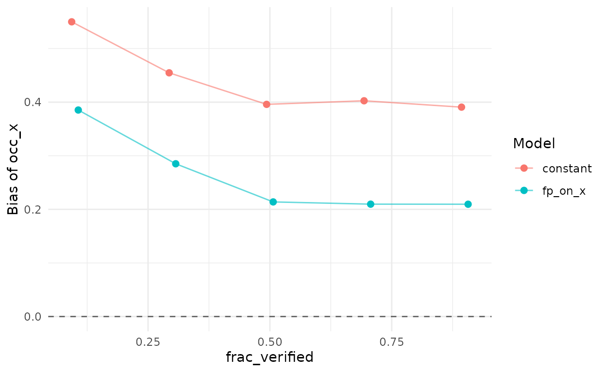
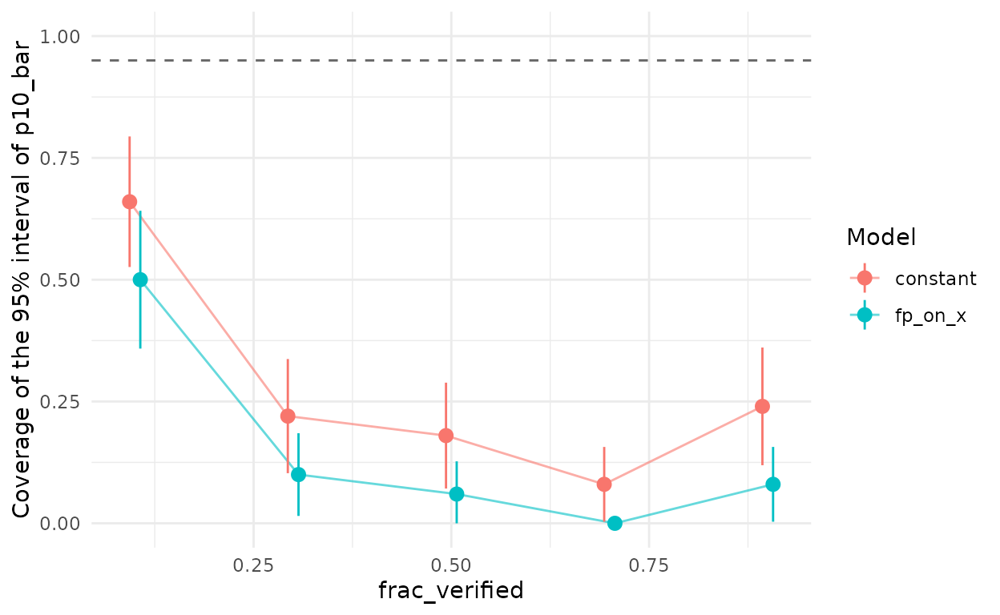

A 95% credible interval should contain the true value in about 95% of datasets. When the model is misspecified, it may not, and nothing in a single fit will warn you. Simulation-based calibration answers the question for a given design: simulate many datasets from known parameters, fit the model to each, and count how often the intervals cover the truth. This is a coverage-based form of simulation-based calibration checking, one of the steps of the Bayesian workflow (Gelman et al., 2026, Ch. 31).
The workflow
- Describe the design you can afford: number of sites, automated occasions, fraction of sites verified, and plausible detection and false-positive rates.
- Describe the false-positive structure you suspect: homogeneous, random among sites, or tracking an environmental gradient.
- Run
fp_calibrate()with the candidate models. - Read the coverage and bias of the quantity you care about, usually the occupancy slope.
library(crywolf)
fp_compile() # compile once before starting parallel workers
future::plan(future::multisession, workers = 8)
design <- expand.grid(
nsite = 300, nocc = 20, p10 = 0.05, frac_verified = 0.3,
conf_effect = c(0, 0.5, 1.5), conf_cor = 0.7
)
cal <- fp_calibrate(
design,
models = list(constant = ~ 1, fp_on_x = ~ x),
occ = ~ x, reps = 50, parallel = TRUE
)
summary(cal)The code above is not run when this vignette is built; the output
below comes from the same call, saved in advance. summary()
prints, for the occupancy slope, the coverage of the 95% intervals, its
Monte Carlo standard error, the bias, and a verdict:
#> Calibration summary (95% intervals)
#>
#> Occupancy slope:
#> cell model nsite nocc p10 frac_verified conf_effect conf_cor n failed
#> 1 constant 300 20 0.05 0.3 0.0 0.7 50 0
#> 1 fp_on_x 300 20 0.05 0.3 0.0 0.7 50 0
#> 2 constant 300 20 0.05 0.3 0.5 0.7 50 0
#> 2 fp_on_x 300 20 0.05 0.3 0.5 0.7 50 0
#> 3 constant 300 20 0.05 0.3 1.5 0.7 50 0
#> 3 fp_on_x 300 20 0.05 0.3 1.5 0.7 50 0
#> coverage mc_se bias rmse prop_divergent verdict
#> 0.98 0.020 -0.0082 0.13 0.00 ok
#> 0.98 0.020 -0.0081 0.13 0.00 ok
#> 0.96 0.028 0.0094 0.13 0.00 ok
#> 0.96 0.028 -0.0016 0.13 0.02 ok
#> 0.22 0.059 0.4090 0.44 0.00 collapsed
#> 0.62 0.069 0.2301 0.27 0.00 collapsed
#>
#> All quantities: inspect the returned tibble.
Coverage of the 95% interval of the occupancy slope against the strength of the confusion, for the constant-rate model and for a false-positive rate that depends on the occupancy covariate. Bars span two Monte Carlo standard errors; the dashed line is the nominal coverage.
Each replicate costs one Stan fit per model, so this design needs 3
cells × 50 replicates × 2 models = 300 fits. With 50 replicates, the
Monte Carlo standard error of a coverage of 0.95 is about 0.03, enough
to tell a calibrated model from a broken one; raise reps
only to pin a borderline value. Every model is fitted to the same
datasets, so comparisons between models are paired.
The column prop_divergent is the share of fits with at
least one divergent transition. In this run only 2 of the 800 fits had
one, and the largest R-hat was 1.01. Check max_rhat and
divergences in the returned tibble before trusting a cell
whose fits had many. The simulated designs here have no recorder effect,
so the calibration fits leave the recorder random intercept out; fitting
a random effect whose true variance is zero is a common source of
divergent transitions.
How much to verify
Verification anchors the false-positive rate. It is natural to think
that verifying more sites will rescue a model that is not calibrated,
and fp_verification_curve() tests that directly:
fp_verification_curve(
nsite = 300, nocc = 20, p10 = 0.05, conf_effect = 1.5, conf_cor = 0.7,
frac_verified = c(0.1, 0.3, 0.5, 0.7, 0.9),
models = list(constant = ~ 1, fp_on_x = ~ x),
reps = 50, parallel = TRUE
)#> Calibration summary (95% intervals)
#>
#> Occupancy slope:
#> cell model frac_verified nsite nocc p10 conf_effect conf_cor n failed
#> 1 constant 0.1 300 20 0.05 1.5 0.7 50 0
#> 1 fp_on_x 0.1 300 20 0.05 1.5 0.7 50 0
#> 2 constant 0.3 300 20 0.05 1.5 0.7 50 0
#> 2 fp_on_x 0.3 300 20 0.05 1.5 0.7 50 0
#> 3 constant 0.5 300 20 0.05 1.5 0.7 50 0
#> 3 fp_on_x 0.5 300 20 0.05 1.5 0.7 50 0
#> 4 constant 0.7 300 20 0.05 1.5 0.7 50 0
#> 4 fp_on_x 0.7 300 20 0.05 1.5 0.7 50 0
#> 5 constant 0.9 300 20 0.05 1.5 0.7 50 0
#> 5 fp_on_x 0.9 300 20 0.05 1.5 0.7 50 0
#> coverage mc_se bias rmse prop_divergent verdict
#> 0.08 0.038 0.46 0.48 0.02 collapsed
#> 0.46 0.070 0.28 0.31 0.00 collapsed
#> 0.12 0.046 0.43 0.44 0.00 collapsed
#> 0.48 0.071 0.27 0.30 0.00 collapsed
#> 0.22 0.059 0.39 0.42 0.00 collapsed
#> 0.66 0.067 0.21 0.26 0.00 collapsed
#> 0.12 0.046 0.40 0.42 0.00 collapsed
#> 0.68 0.066 0.21 0.24 0.00 collapsed
#> 0.20 0.057 0.39 0.42 0.00 collapsed
#> 0.64 0.068 0.21 0.25 0.00 collapsed
#>
#> All quantities: inspect the returned tibble.
Coverage of the 95% interval of the occupancy slope against the fraction of sites verified, under structured confusion (effect 1.5, correlation 0.7).
What to expect
In the simulation study that motivated this package (Provete et al., in preparation), at a base false-positive rate of 0.05:
- When false positives were homogeneous, the constant-rate model kept nominal coverage of the occupancy slope. When they varied at random among sites, the estimate of the false-positive rate became unreliable, but coverage of the slope fell only to 0.81 (across all cells of that regime).
- When the false-positive rate tracked a gradient correlated with the occupancy covariate (effect 1.5 on the logit scale, correlation 0.7), coverage of the slope fell to 0.08–0.20, and verifying up to 90% of the sites did not restore it.
- Letting the false-positive rate depend on the occupancy covariate
(
fp = ~ x) recovered part of the coverage (0.48–0.66) and improved with verification; with the true gradient (fp = ~ w), coverage returned to 0.90–0.97. - Weak confusion (effects of 0.5 or less) left the constant-rate model calibrated at every correlation, including when false positives depended on the occupancy covariate itself.
So, if fp_verification_curve() shows the constant-rate
model stuck below nominal coverage, verifying more is not the remedy.
Model the false-positive rate instead, and verify enough to tell its
effect apart from the occupancy effect.
Calibrating a fitted model
The checks above describe a planned design with simulated covariates.
Once a model has been fitted to real data,
fp_calibrate_fit() asks the same question for data like the
real ones: it simulates datasets from the fit with
simulate(), keeping the sites, covariates, occasions,
recorders, and verification of the real data, refits each candidate
model to every dataset, and scores the coverage and bias of their
intervals. The cost is that of refitting the real data reps
times per model.
A typical use pits the model you fitted against a simpler one. If a model in which the false-positive rate depends on humidity found a clear effect, data simulated from it show whether a constant rate would have biased the occupancy effects at your sample size and verification effort:
m_rh <- fp_occu(d, occ = ~ temp + rh, det = ~ bio, fp = ~ rh)
cal_fit <- fp_calibrate_fit(m_rh, models = list(constant = ~ 1, fp_rh = ~ rh),
reps = 50, parallel = TRUE)
summary(cal_fit)
plot(cal_fit, parameter = "occ_rh")By default every dataset is simulated from the posterior means;
truth = "posterior" draws a different set of parameter
values from the posterior for each dataset, so that the check also
reflects how uncertain the fit was. Either way, the check covers only
the structure of the generating model: a dependence of the
false-positive rate on a variable that was not measured is not part of
it.
Plotting
plot() draws the coverage of the occupancy slope against
the design column that varies (here, the fraction of sites verified),
one colour per model, with intervals of two Monte Carlo standard errors
and a dashed line at the nominal level. type = "bias" plots
the bias instead, and parameter selects another scored
quantity. The result is a ‘ggplot2’ object that can be modified as
usual.
For the verification curve above, the bias of the occupancy slope
shows why coverage stays low: the constant-rate model overestimates the
slope at every level of verification, and modelling the rate on
x reduces, but does not remove, the bias.

Bias of the posterior mean of the occupancy slope against the fraction of sites verified, under structured confusion (effect 1.5, correlation 0.7). The dashed line marks no bias.

Coverage of the 95% interval of the mean false-positive rate over sites
(p10_bar), in the same simulations.
Neither model recovers the mean false-positive rate over sites under
this confusion. Both estimate it at about 0.077 when the truth is about
0.10, with intervals only about 0.02 wide, so coverage stays at 0.22 or
below at every level of verification. Modelling the rate on
x reduces the bias of the occupancy slope, but a rate that
depends on the unmeasured gradient w is not fully captured
by x.
References
Gelman, A., Vehtari, A., McElreath, R., Simpson, D., Margossian, C. C., Yao, Y., Kennedy, L., Gabry, J., Bürkner, P.-C., Modrák, M., & Leos Barajas, V. (2026). Bayesian Workflow. Chapman & Hall. https://avehtari.github.io/Bayesian-Workflow/